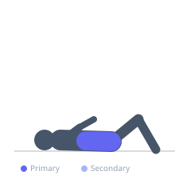

Exercise guide / Dead Bug
Dead Bug
The dead bug is a supine core stability exercise that challenges the ability to maintain a neutral lumbar spine while simultaneously moving the opposite arm and leg. The key training stimulus is anti-extension — resisting the tendency of the lower back to arch away from the floor as the limbs extend. It is a preferred core exercise in lumbar rehabilitation because it allows full core engagement without spinal loading, making it appropriate in early recovery stages.
Primary muscles
transverse abdominis
rectus abdominis
Secondary muscles
obliques
erector spinae
Stabilizers
psoas major
Equipment
No Equipment (Bodyweight)


Starting position
- Lie on the back with the lower back pressed flat against the floor. Arms point straight toward the ceiling. Hips and knees are both bent to 90 degrees (tabletop position).
Setup
- No equipment required. Use a mat.
Steps
- Step 1: Lie supine with arms vertical, hips and knees at 90 degrees (table-top).
- Step 2: Take a deep breath in. On the exhale, brace the core hard and press the lower back firmly into the floor.
- Step 3: Simultaneously lower the right arm overhead (toward the floor behind the head) and extend the left leg toward the floor.
- Step 4: Lower as far as the lower back can remain flat on the floor — stop if the low back begins to arch.
- Step 5: Return both limbs to the starting position on the next exhale. Switch sides.
Coaching cues
- Flatten your back into the floor before each movement
- Move like you are lowering in slow motion
- If your back lifts off the floor, only go halfway
Breathing
- Exhale forcefully to brace before each limb extension. Breathe in at the top.
Range of motion
- Full extension of the working arm and leg to just above the floor — only go as far as lumbar neutrality can be maintained.
Tempo
- 3-second lowering, 1-second pause near floor, 2-second return. 8–12 reps each side × 2–3 sets.
Common mistakes
- Letting the lower back arch off the floor — this is the main error; range must be reduced if it occurs
- Moving too fast and using momentum rather than deliberate control
- Neck tension from trying to hold the head up — rest the head on the floor
Safety
- Safe for most low back pain patients — often one of the first exercises reintroduced
- If pain increases during the movement, stop and consult a clinician
Training
- strength: 8–12 reps
- strength: 2–3 sets
- Rest: {'strength': 60}